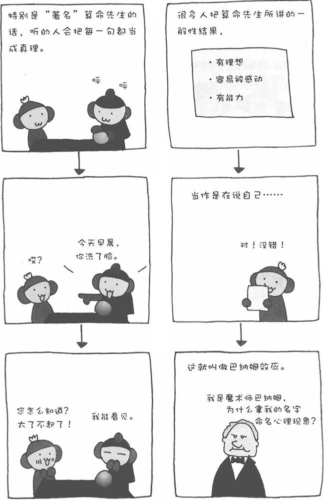

就像通过血型判断性格一样，本来是适用于任何人的一般性描述，可人偏偏会认为那描述的正是自己。这种心理现象被称为"巴纳姆效应"。
实际上，这种心理效应非常吓人。曾有人进行过一项实验，把原本是A型血的性格描述说成是"B型血的性格"，然后拿给B型血的人看，结果竟然有九成左右的人认为自己的性格非常符合描述中的内容。当听到别人说自己"您希望得到周围人的认可"、"您具有浪漫的一面"等等的时候，即使您觉得这并不太适合自己，一般也很少反驳，说"不对"或者"你的说法太不明确了"。大多数时候，人都会表示认同，回答："是啊，是啊。"
不只相信通过血型判断性格属于巴纳姆效应，人相信算命的现象也属于巴纳姆效应。尤其当面对非常"知名"的算命先生时，巴纳姆效应体现得更加明显，人们很容易被算命先生的话打动。实际上，算命先生"骗人"的技巧并不高明，大多数情况都是居心不良的人想利用算命来害人。
比如，算命先生说："您以前肯定因为亲人或朋友的去世，造成了心理上的伤害。"事实上，即使二三十岁的年轻人，至少也有过一、两次亲人或朋友去世的经历，而亲人或朋友的死当然会给当事人带来一定的心理创伤。因此，算命先生说的话，十有八九都能中，而听的人就会认为算命先生真的"能掐会算"。
此外，对于属于特定集团的人，我们会先入为主地认为他具有特定的性质。比如，"日本人很勤劳"、"英国人很绅士"等，其实，这样的概括过于笼统，并不是所有日本人都勤劳，也许并非所有英国人都具有绅士风度。然而，我们很容易戴上先入为主的有色眼镜去看待别人。
